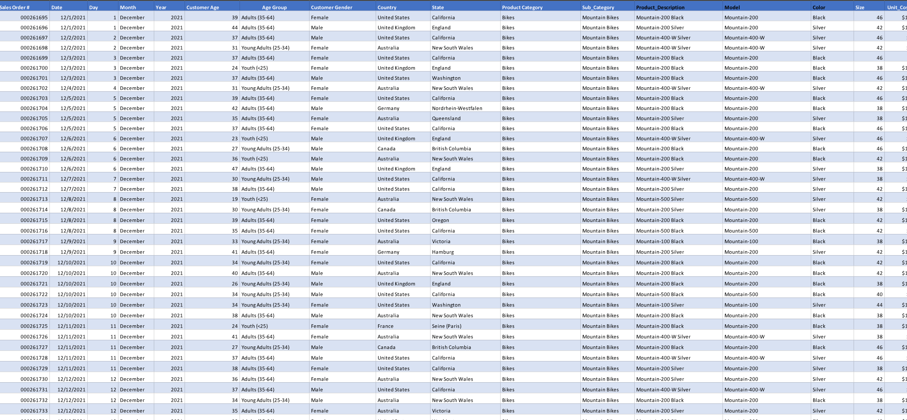
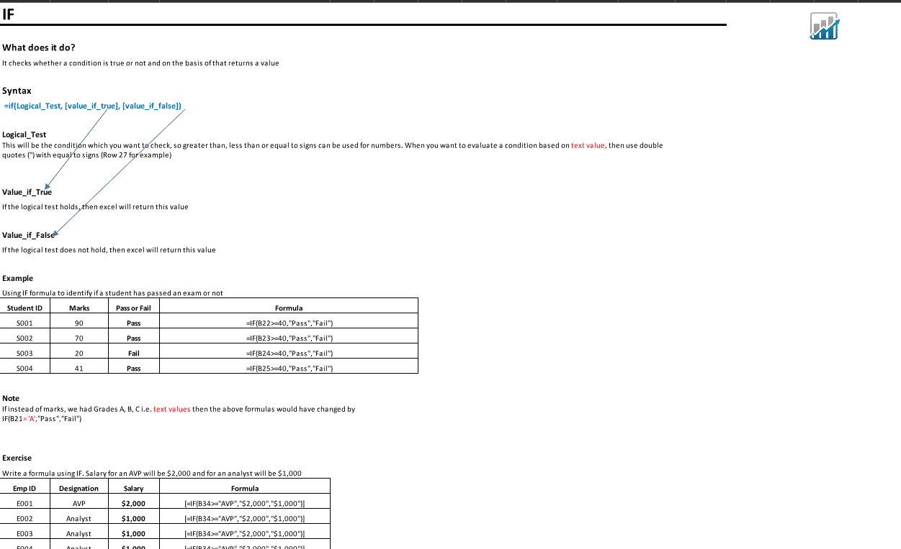
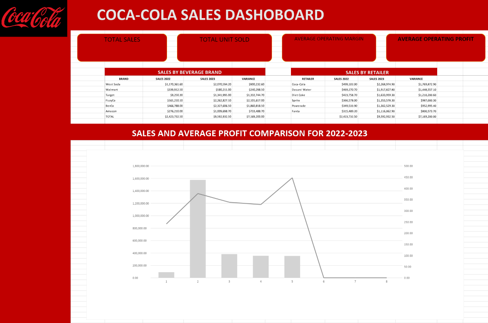
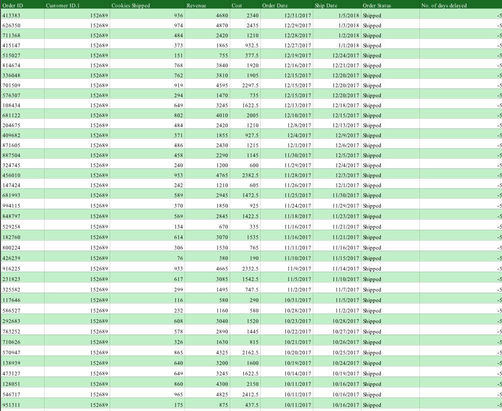
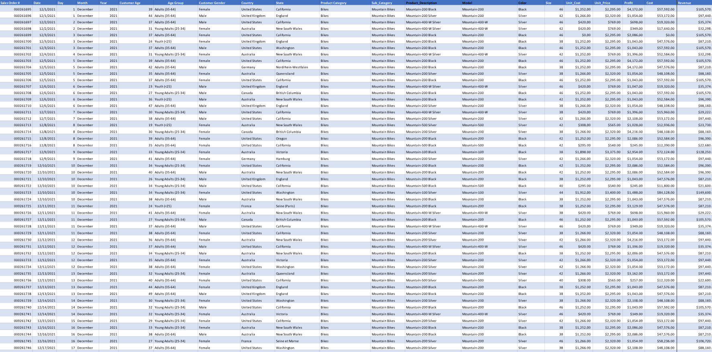
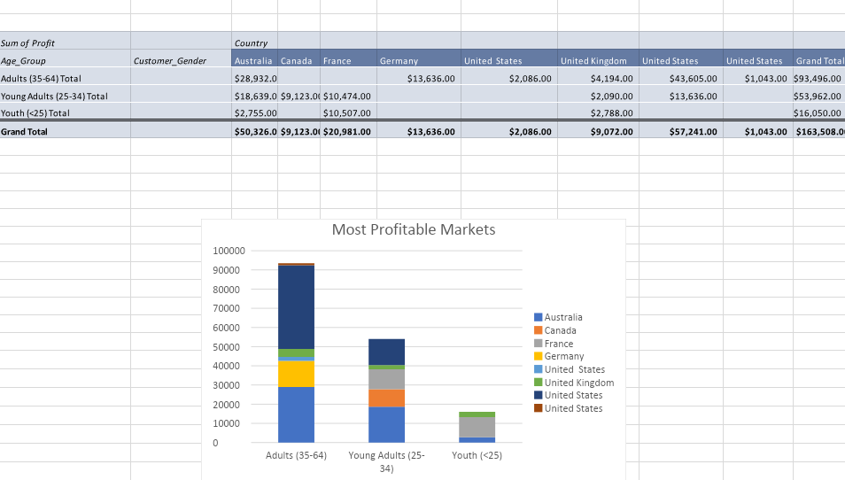
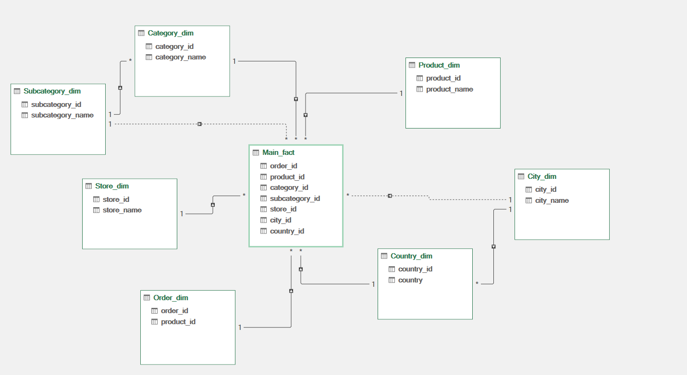

This project focuses on the essential first steps of the data pipeline: cleaning and preparation. Using a raw dataset, I performed structural formatting, handled missing values, and standardized data types to ensure the information is accurate, consistent, and ready for high-level analysis.
Download
This project highlights the practical application of core MS Excel functions. From VLOOKUP and nested IF statements to text manipulation and data validation, these exercises focus on building efficient spreadsheets that minimize manual entry and maximize accuracy.
Download
Transforming complex datasets into clear, interactive visual stories. This project demonstrates the creation of dynamic Excel dashboards using Pivot Tables, Slicers, and advanced charting techniques to provide a high-level overview of key performance indicators and trends at a single glance.
Download
Automating the 'Extract, Transform, Load' (ETL) process using Power Query. This demo showcases the ability to connect to multiple data sources, perform complex data cleaning steps automatically, and create a repeatable workflow that turns messy raw files into clean, analysis-ready tables with a single click.
Download
Eliminating the 'garbage in, garbage out' problem through systematic data refining. This task showcases techniques for auditing raw datasets to resolve missing values, remove duplicates, and standardize disparate formats, significantly reducing the time required for final analysis while increasing data integrity.
Download
Advanced data aggregation and visualization. This project focuses on using Pivot Tables and Charts to turn raw datasets into organized, visual reports, providing a clear and efficient way to analyze complex information at a glance.
Download
Applying relational database principles to spreadsheet data. This project demonstrates the use of Power Query to normalize flat files into structured tables, effectively reducing data redundancy and improving integrity. By separating attributes into logical entities and establishing keys, I’ve created a scalable data model optimized for efficient analysis.
Download